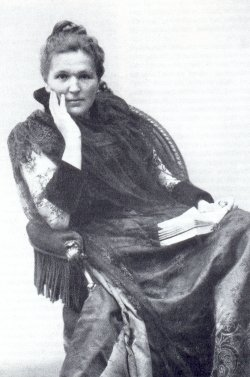

Marie Lang (8 March 1858 – 14 October 1934) was an Austrian feminist, theosophist and publisher. Born in 1858 in Vienna, Lang was raised in a liberal, upper-middle-class home.  After divorcing her first husband in 1884, she married Edmund Lang and the two hosted an influential salon for politicians and intellectuals.
At the end of the 1880s, Lang was introduced to the women's movement by her friends, Auguste Fickert and Mayreder. She quickly became one of the most prominent women's rights activists of her era. In 1891, Lang's daughter Lilith was born, for whom Mayreder would serve as godmother.
In 1893, the Allgemeiner Österreichischer Frauenverein (General Austrian Women's Association) was formed by Lang, Fickert, and Mayreder, as one of the radical organizations in the Viennese women's movement. More similar to organizations developed for workers than middle- and upper-class women's groups, which focused on charity, the Frauenverein supported working class rights to employment, education and legal protection for the poor, and the abolition of laws regulating prostitution.